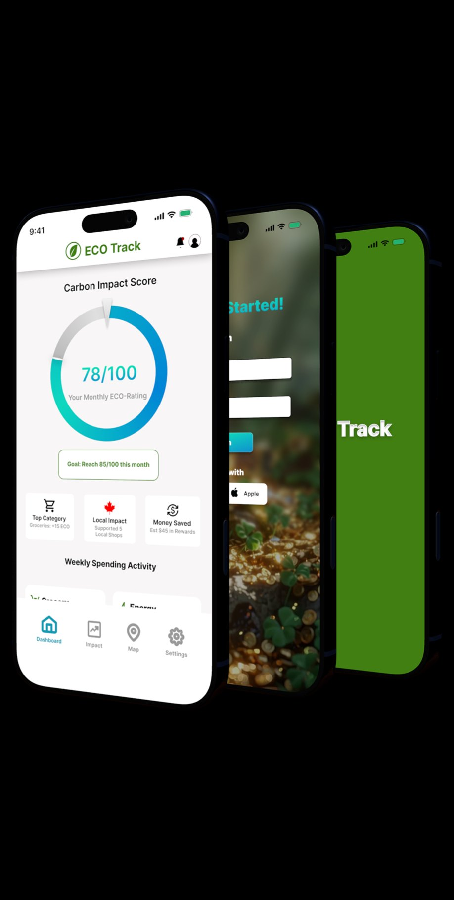
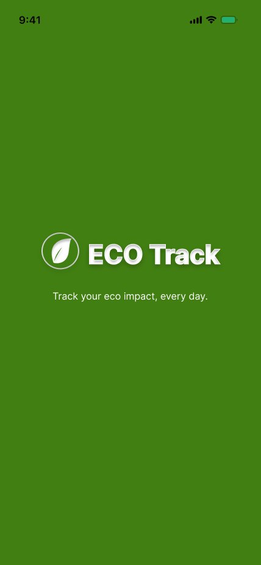
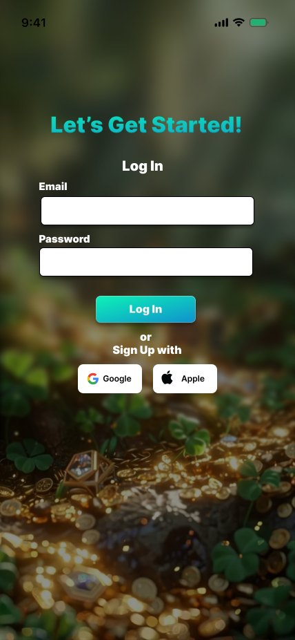
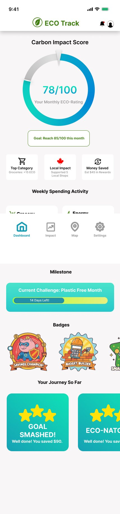
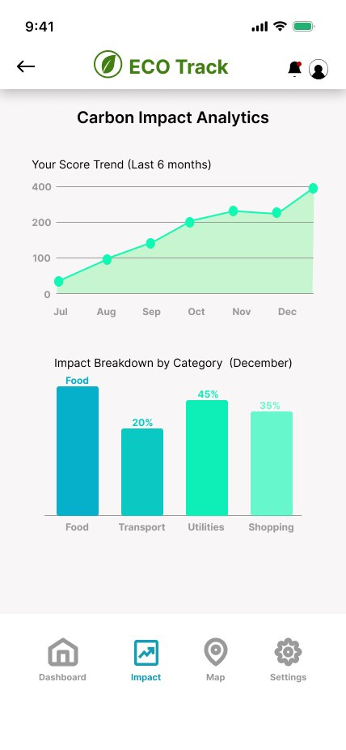
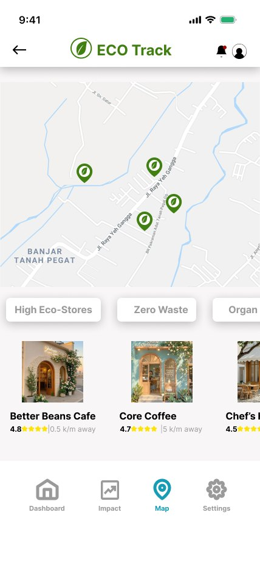
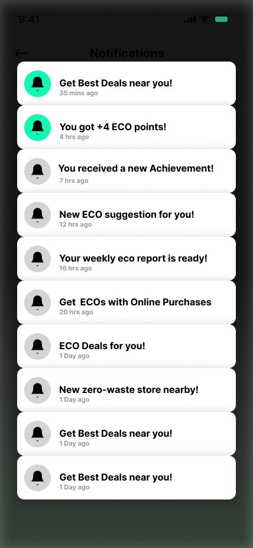
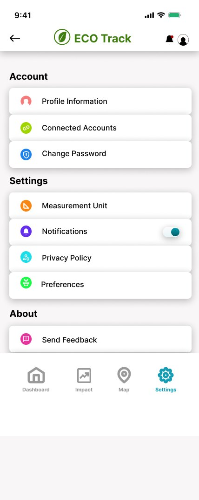
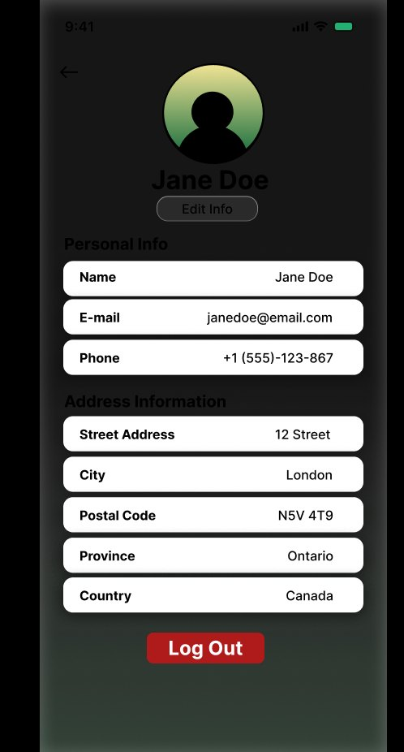
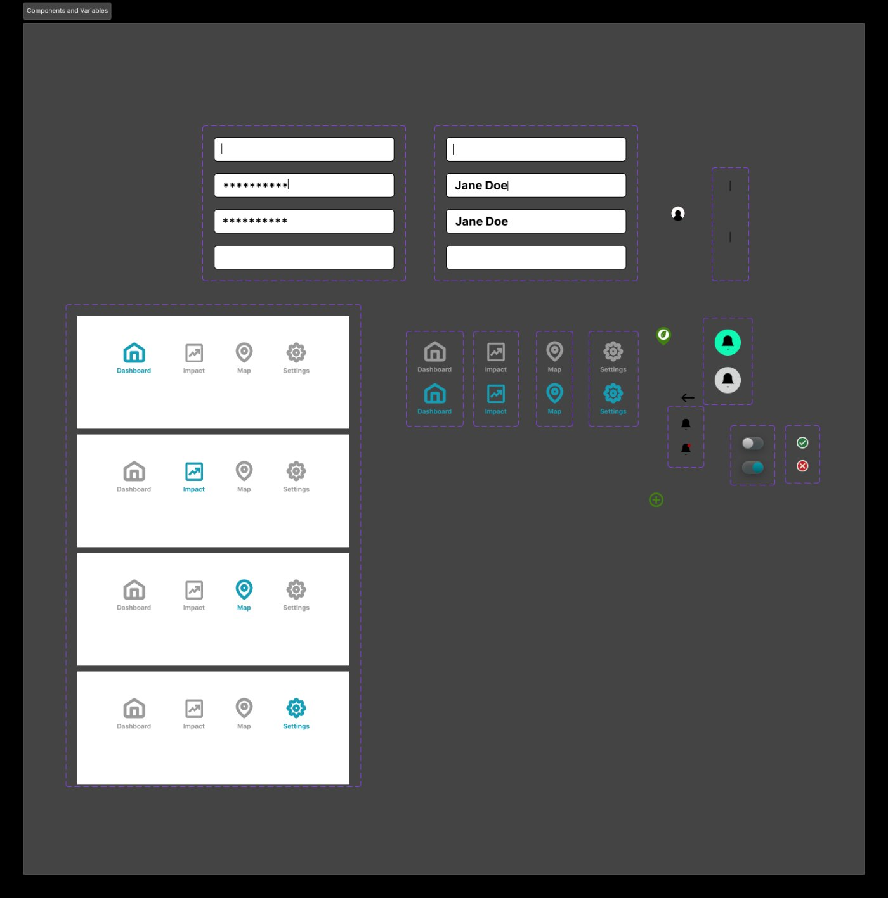

ECO Track is an iOS concept that measures your carbon footprint, connects you to local eco-friendly stores, and sends eco-activity alerts. A design I built entirely on my own, from scratch, for the first time.

ECO Track is an iOS app concept built around a simple belief: most people want to live more sustainably, but they don't know where to start. The app meets them on their phone, inside their daily routine, and makes the invisible visible.
Three features work together to do this. A home screen that shows your eco-score so you can see the impact of your choices. A deals section that surfaces eco-friendly stores nearby so acting on that progress is frictionless. And a notifications system that keeps you engaged with the right nudges at the right time.
I built ECO Track because I wanted to understand what it actually feels like to design a complete product end to end. Not a single component, not a redesign exercise. A real thing with a real problem. The sustainability space felt right because the design challenge is genuinely hard: carbon footprints are abstract, numbers alone don't motivate people, and most "green" apps feel like homework.
My role: everything. Product concept, information architecture, wireframes, visual design, and screen-level copy. There was no brief, no mentor, no design system to lean on. Every decision I made was my own to defend and my own to learn from.
The sustainability app category has a trust problem. Most of them open with a CO₂ counter that ticks up in real time and leaves you feeling guilty and stuck. Knowing you produce 8.4 tonnes of carbon per year doesn't tell you what to do about it Monday morning.
I framed the design problem around three gaps I kept running into when I looked at the space:
Carbon numbers are hard to feel. A score that rises when you do something right is something you can actually chase.
Knowing that eco-friendly stores exist near you means nothing if finding them requires a separate search. Discovery has to live inside the same experience.
Most apps send generic blasts. An eco-alert that says "new zero-waste store opened nearby" is one you actually want to receive.
These three gaps shaped every screen. The home screen addresses abstraction, the deals feed addresses action, and the notification design addresses relevance. I didn't solve all of it perfectly, since this was my first project, but framing the problem clearly gave my design decisions a direction to point in.
ECO Track is built for one kind of person: someone who is already curious about sustainability but hasn't made it a habit yet. Not the committed activist. Not the person who has never thought about it. The person in the middle, the one who buys the reusable bag and then forgets it in the car.
That framing did a lot of design work. It meant I didn't need to explain what a carbon footprint is. It meant the onboarding could skip the lecture. And it meant the right emotional register for the app was encouragement, not alarm.
"I care, I just don't know if what I'm doing actually matters."
This isn't a quote from a user interview. I hadn't run formal research yet, since this was my first project. But it's the sentence I kept writing at the top of my rough sketches, and it shaped every copy decision I made. The app had to answer it: yes, here's proof, and here's what to do next.
What I'd do before building this for real: run at least five contextual interviews with people in this "curious but stuck" segment. I know the problem from my own experience, but designing from a single data point (yourself) is the fastest way to miss the edges of the actual problem space.
I designed ECO Track end to end: onboarding, daily use, impact tracking, discovery, account, and privacy. The screens below appear in the order a user encounters them, alongside the thinking behind each one.
The flash screen is the brand in a single frame: full-bleed green, with the ECO Track leaf logo and wordmark centered and one line of intent beneath them, "Track your eco impact, every day." One color, one mark, one promise. Anything past that would only dilute it.
Log in has one job: get users past authentication before they have a reason to hesitate. Email, password, and a social sign-in option below. It's also the screen I'm least happy with. The current build sits on a dark photographic background that fights the clean, light system every screen after it uses. My self-audit flags it below, and redesigning it to a light, on-brand layout is the first thing on my fix list.


The home screen is the one users open most, so every hierarchy decision here mattered. The eco-score sits at the top: one number, clearly labeled, with a trend indicator. Deals come directly below it, the eco-friendly stores near you, right where motivation is highest.
I'd originally sketched a home screen covered in metrics: daily carbon output, weekly trend, category breakdown. It looked thorough and it was exhausting. Stripping back to a single score changed everything. You can always tap through to the breakdown; the home screen isn't where you analyze, it's where you check in.

The decision I'm least sure about: putting deals directly on the home screen instead of a dedicated Discover tab feels right at nine screens. If the deals section grows to need filters, maps, and categories, it will outgrow this placement fast. That's a version-two problem, but one I should have thought about at version one.
Impact is where the raw data lives. The screen breaks your footprint down by category (transport, food, energy, purchases) and ranks them so you know where the leverage is. I wanted the breakdown to feel explanatory rather than accusatory: show people where they can do the most, not only where they're falling short.
Map and Best Deals sit on the same screen with two tabs. "Where is this place?" and "is it actually worth it?" are the same question from the user's perspective, so I put both answers in one place rather than splitting them across two separate parts of the app.


A notification is an interruption. It either adds value or it teaches the user to ignore you. I spent more time on notification copy than on any other single element, writing each one to answer "why now, why me?": a zero-waste store that just opened near you, a weekly report that's ready, a tip tied to something you actually did.
One useful thing, clearly stated, no filler. Generic blasts are how apps get uninstalled.

Settings, Profile, and Encryption are the screens users only visit when something needs adjusting. Settings uses icon-labeled rows for scannability. Profile gives users a sense of progress over time (eco streak, total impact saved, badges) without pushing them to share it. Encryption explains what ECO Track stores and what it doesn't. I almost cut that screen, then kept it: data privacy came up unprompted every time I thought seriously about this user, and a screen that addresses it turned out to matter more than the space it costs.


The nav bar, notification badge, profile avatar, form inputs, and toggle switch are all components with defined properties and variants. The nav bar has four states (Dashboard, Impact, Map, Settings), and each variant updates icon color and label weight in sync. Changing the active tab on any screen means swapping a component instance, not redrawing the bar.
Variables handle the brand green. One value covers every element that uses it: the active icon, the score ring, the CTA button, the flash screen background. If the color ever changes, it changes everywhere at once. That's the difference between a file that scales and one that breaks the moment you revisit it.

Building these before touching any screen meant every screen was assembled from the same parts. When I audited the file afterward, the issues I found were in the screen-level work, not the foundation. That's the right order of problems to have.
Green was the obvious color for an eco app, which made it a risk. Used carelessly it reads as a cliché. I anchored the system on a single deep forest green for the elements that carry identity: the logo, the flash screen, the primary actions. The intent is that when the anchor color stays consistent, it stops being decoration and becomes identity. I'm not all the way there yet. The score ring and a few accents still drift toward teal, and the Settings icons are a multicolor set I need to rein in. But the anchor is set, and the cleanup is scoped.
The home screen could have been a dashboard. I made it a single number. You can tap through to the category breakdown on the Impact screen; the home screen is where you check in, not where you analyze. A score gives you something to chase. A wall of metrics gives you something to avoid.
Most apps put a discovery feed in its own tab, which means users have to go looking for it. Putting deals directly below the score keeps awareness and action on the same scroll. The connection between "here's how you're doing" and "here's something you can do about it" should be immediate.
Every notification in ECO Track is written to earn its place. A new store nearby is specific. A weekly report that's ready is timely. A tip tied to an action is relevant. I treated the notification screen as a product in itself, not an afterthought. The principle is simple: if a notification doesn't pass the "why now, why me?" test, it doesn't ship. The current screen doesn't fully live up to that yet. A few placeholder "Get Best Deals near you!" rows are still repeated, so tightening the notification copy back to that principle is part of the cleanup pass.
After finishing ECO Track, I went back into the Figma file and audited it the way I'd audit someone else's work: looking for the things that are easy to miss when you built every frame yourself. It was uncomfortable in a useful way. Here's what I found:
Every one of those problems is fixable. What they tell me is more interesting than the fix: I was so focused on designing individual screens that I never stepped back and looked at the file as a whole. The canvas view, the layers panel, the page structure: all of it is part of the deliverable, especially at portfolio level. A file that looks polished when you zoom in but chaotic when you zoom out is only half done.
Here's where the cleanup stands. One of these is done; the rest are scoped and prioritized. This is the plan I'm working through, in order, not a wish list.
ECO Track was my first design project. That framing matters, not as an excuse but as context for what I was actually practising. I wasn't trying to ship a startup. I was trying to find out whether I could hold a whole product in my head at once: the problem, the user, the flow, the screen, the pixel, the word. And whether I could make all of those parts agree with each other.
Mostly they did. The places they didn't are the places I learned the most. Designing from a single data point, myself, got me to a coherent concept fast, but it also means I can't yet tell which of my decisions are real insights and which are just my own habits dressed up as design. Five honest conversations would sort that out. So would a working prototype in someone else's hands.
If I started over tomorrow, I'd build the design system before the screens, talk to people before drawing anything, and audit the file at the halfway mark instead of the end. But I'm glad I did it in the wrong order once. It's the reason I now understand why the right order matters.
The one thing I'm taking with me: a design isn't finished when the screens look good. It's finished when the file, the flow, the copy, and the first impression all tell the same story. Polishing one screen is craft. Making every screen agree is design.